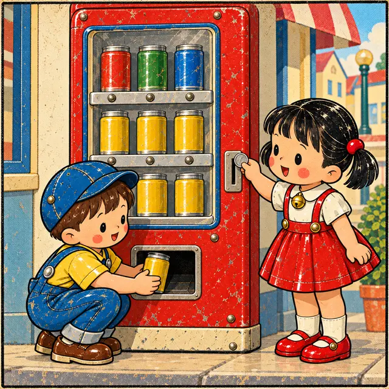
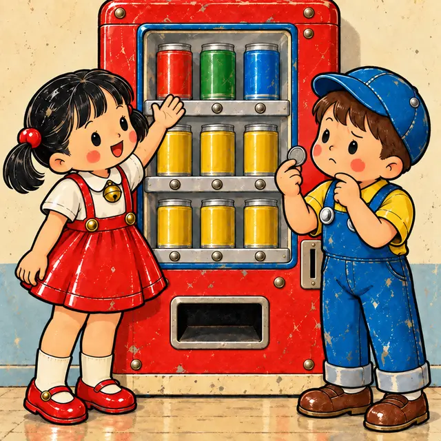
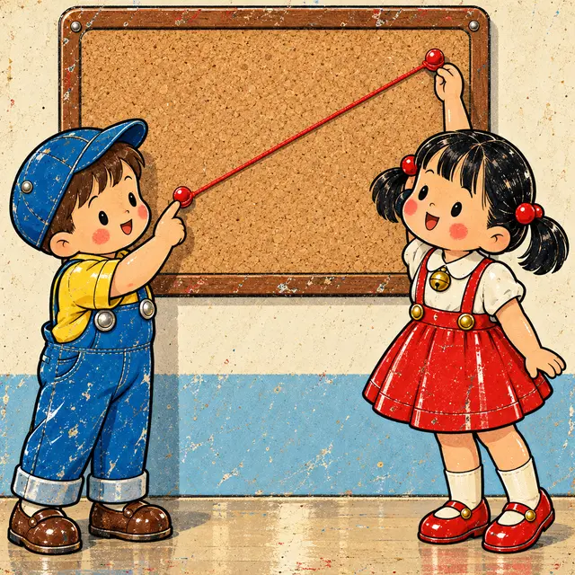
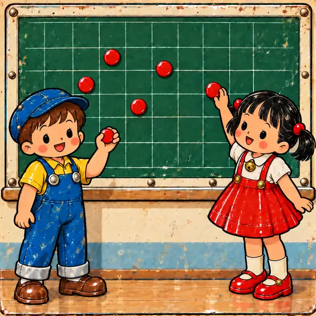
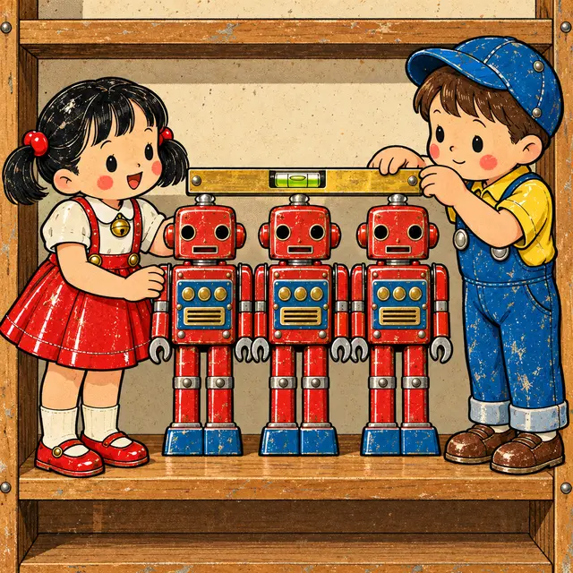
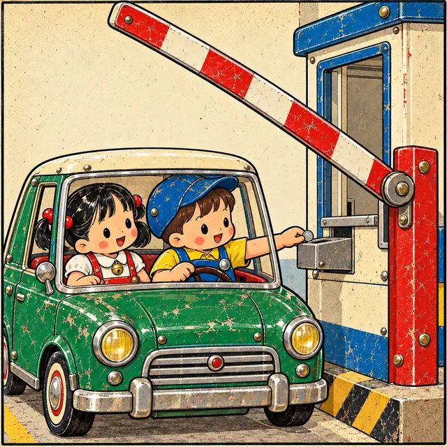

課前暖身漫畫：投 25 元會掉出哪一瓶？
鐵皮玩具小鎮的販賣機，每瓶汽水 \(25\) 元：買幾瓶一確定，要付多少錢也跟著確定。阿扣反過來想：「投 \(25\) 元，會掉出哪一瓶？」——小鈴指著那一排：25 元的有三種，光知道價錢，說不出是哪一瓶！
重點 1：函數的意義——給定每一個 \(x\)，都恰有一個 \(y\) 與它對應
重點整理與敘述
- 生活中兩種量常常有關係：一種量改變，另一種量也跟著變化。例如每瓶 \(25\) 元的汽水，買的瓶數一確定，總價就跟著確定。
- 把兩個變數分別用 \(x\)、\(y\) 表示。若對於給定的每一個 \(x\)，都恰有一個 \(y\) 與它對應，就說「\(y\) 是 \(x\) 的函數」。
- 有沒有算式不是重點：一年中「月分」對應「當月天數」寫不出一條算式，但每個月分都只有一個天數，所以天數是月分的函數。
- 學過的正比 \(y = kx\)、反比 \(y = \frac{k}{x}\)（\(x \ne 0\)），給定每一個 \(x\) 都恰有一個 \(y\)，所以 \(y\) 都是 \(x\) 的函數。
- 本章說的函數，一律是「\(y\) 是 \(x\) 的函數」：\(x\) 是先給定的那一個，\(y\) 是跟著它確定的那一個。
| 瓶數 \(x\)（瓶） | \(1\) | \(2\) | \(3\) | \(4\) |
|---|---|---|---|---|
| 總價 \(y\)（元） | \(25\) | \(50\) | \(75\) | \(100\) |
\(\Rightarrow\)「\(y\) 是 \(x\) 的函數」

視覺互動探索：函數機
選一台函數機，拉動滑桿決定投進去的 \(x\)。看看每投進一個 \(x\)，是不是都只會掉出一個 \(y\)；下方的對應表裡，每一個 \(x\) 都只射出一支箭頭。
形成性評量 (函數的意義)
Q1. 小鈴用 \(300\) 元買單價 \(x\) 元的鐵皮玩具，剛好可以買 \(y\) 個。當 \(x = 20, 25, 50, 60\) 時，對應的 \(y\) 依序為何？\(y\) 是不是 \(x\) 的函數？
解析：答案為 A。單價乘以個數等於 \(300\)，所以 \(y = \frac{300}{x}\)：\(300 \div 20 = 15\)、\(300 \div 25 = 12\)、\(300 \div 50 = 6\)、\(300 \div 60 = 5\)。每一個單價都只對應一個個數，所以 \(y\) 是 \(x\) 的函數（\(x\)、\(y\) 成反比）。
B 錯：\(x\) 變大時 \(y\) 變小，並不影響「每個 \(x\) 恰有一個 \(y\)」。
C 錯：把 \(300\) 乘上單價，那不是買得到的個數。
D 錯：用 \(300\) 減去單價，那是只買一個時剩下的錢。
Q2. 已知 \(x\)、\(y\) 成反比，且 \(x = 4\) 時 \(y = 9\)。下列敘述何者正確？
解析：答案為 B。成反比表示 \(xy = k\)，\(k = 4 \times 9 = 36\)，所以 \(y = \frac{36}{x}\)（\(x \ne 0\)）。給定每一個 \(x\)，都恰有一個 \(y\) 與它對應，\(y\) 是 \(x\) 的函數。
A 錯：增減的方向與是不是函數無關。
C 錯：\(y = \frac{9}{4}x\) 是成正比的寫法。
D 錯：函數不一定要寫成 \(y = ax + b\)，連寫不出算式的月分與天數都是函數。
重點 2：不是函數——有一個 \(x\) 對到不只一個 \(y\)
重點整理與敘述
- 如果不是每一個給定的 \(x\) 都恰有一個 \(y\) 與它對應，就說「\(y\) 不是 \(x\) 的函數」。只要找到一個這樣的 \(x\) 就夠了。
- 例：2027 年（平年）以天數為 \(x\)、月分為 \(y\)。\(x = 28\) 只對到 \(2\) 月，但 \(x = 30\) 對到 \(4, 6, 9, 11\) 月，\(y\) 不只一個，所以月分不是天數的函數。
- 從 \(x\) 畫箭頭到 \(y\)：一對一、多對一都是函數；一對多不是函數。
- 最常誤判的是「多對一」：\(1\) 月、\(3\) 月都對到 \(31\) 天，是兩個 \(x\) 對到同一個 \(y\)，仍然是函數。要看的是「一個 \(x\) 有幾個 \(y\)」，不是「一個 \(y\) 被幾個 \(x\) 對到」。
- 方向不能反過來：天數是月分的函數，月分卻不是天數的函數。誰是 \(x\)、誰是 \(y\) 要先看清楚。
| 天數 \(x\)（天） | 月分 \(y\)（月） | \(y\) 有幾個 |
|---|---|---|
| \(28\) | \(2\) | \(1\) 個 |
| \(30\) | \(4\)、\(6\)、\(9\)、\(11\) | \(4\) 個 |
| \(31\) | \(1\)、\(3\)、\(5\)、\(7\)、\(8\)、\(10\)、\(12\) | \(7\) 個 |

視覺互動探索：座號與成績的箭頭圖
鐵皮玩具社 6 位社員的小考成績。先看「座號 → 成績」，再切到「成績 → 座號」。拉動 6 號的成績，讓他和別人同分或不同分，看看哪一個方向會出現「一個 \(x\) 射出兩支箭頭」。
形成性評量 (不是函數)
Q3. 下列各組數對 \((x, y)\) 列出 \(x\)、\(y\) 之間全部的對應，哪一組的 \(y\) 不是 \(x\) 的函數？
解析：答案為 C。\(x = 5\) 同時對到 \(y = 1\) 與 \(y = 3\)，一個 \(x\) 對到兩個 \(y\)（一對多），所以 \(y\) 不是 \(x\) 的函數。
A 錯：四個 \(x\) 都對到 \(7\)，是多對一，仍是函數（而且是常數函數）。
B 錯：每個 \(x\) 恰有一個 \(y\)，是函數。
D 錯：\(x\) 由大排到小沒有關係，每個 \(x\) 仍恰有一個 \(y\)，是函數。
Q4. 玩具小鎮的飲料攤：紅茶 \(20\) 元、綠茶 \(20\) 元、奶茶 \(35\) 元、可可 \(40\) 元、檸檬汁 \(30\) 元。下列敘述何者正確？
解析：答案為 D。以價格為 \(x\) 時，\(x = 20\) 對到紅茶與綠茶兩個 \(y\)，所以品項不是價格的函數。
A 錯：以品項為 \(x\) 時，每個品項只有一個價格；紅茶、綠茶同價是「多對一」，價格仍是品項的函數。
B 錯：「每個品項只有一個價格」說的是另一個方向（品項為 \(x\)），題目這裡的 \(x\) 是價格。
C 錯：\(30\) 元只有檸檬汁一種。
重點 3：一次函數 \(y = ax + b\)（\(a \ne 0\)）與常數函數 \(y = b\)
重點整理與敘述
- 形如 \(y = ax + b\)（\(a\)、\(b\) 為常數，且 \(a \ne 0\)）的關係式，\(y\) 是 \(x\) 的函數，而且 \(x\) 的最高次數是一次，稱 \(y\) 是 \(x\) 的一次函數。
- 例：攝氏 \(x\) 度換成華氏 \(y\) 度，\(y = \frac{9}{5}x + 32\)；兩人合力編 \(100\) 本書，一人編 \(x\) 本、另一人編 \(y\) 本，\(y = -x + 100\)。兩者都是一次函數。
- 形如 \(y = b\)（\(b\) 為常數）的關係式，不論 \(x\) 是多少，對應的 \(y\) 都相同，稱 \(y\) 是 \(x\) 的常數函數。
- 例：手機月繳 \(600\) 元不限時數上網，上網 \(x\) 分鐘、該月應繳 \(y\) 元，\(y = 600\)。每一個 \(x\) 都恰有一個 \(y\)（都是 \(600\)），所以常數函數也是函數。
- 先化簡再判斷：\(y = 3(x + 2) - 3x\) 化簡後是 \(y = 6\)，\(x\) 消失了，是常數函數，不是一次函數。
- \(y = \frac{240}{x}\) 這種反比，是函數，但既不是一次函數也不是常數函數。
視覺互動探索：計費機的分類
拉動 \(a\) 與 \(b\)，看對應表裡 \(x\) 每多 \(1\)、\(y\) 變化多少。把 \(a\) 拉到 \(0\)，看看 \(y\) 變成什麼樣子、函數換成哪一類。
形成性評量 (一次函數與常數函數)
Q5. 下列哪一個關係式中，\(y\) 是 \(x\) 的常數函數？
解析：答案為 C。先化簡：
\[\begin{aligned} & y = 4(x + 1) - 4x \\ & = 4x + 4 - 4x = 4 \end{aligned}\]
\(x\) 消失了，不論 \(x\) 是多少 \(y\) 都是 \(4\)，是常數函數。
A 錯：\(y = \frac{1}{6}x\)，\(a = \frac{1}{6} \ne 0\)，是一次函數。
B 錯：\(a = 5 \ne 0\)，是一次函數。
D 錯：\(a = 1 \ne 0\)，是一次函數。
Q6. 某健身房的方案：每月繳 \(650\) 元，可以不限次數使用。設某月使用 \(x\) 次、該月應繳 \(y\) 元，下列何者正確？
解析：答案為 A。不論使用幾次，應繳金額都是 \(650\) 元，\(y = 650\)。每個 \(x\) 都恰有一個 \(y\)，是常數函數。
B 錯：\(y = 650x\) 表示每用一次付 \(650\) 元，不是「不限次數」。
C 錯：函數只要求每個 \(x\) 恰有一個 \(y\)，不要求 \(y\) 跟著變。
D 錯：\(\frac{650}{x}\) 是「平均每次花多少錢」，不是應繳金額。
重點 4：函數值——把 \(x\) 代入，求對應的 \(y\)
重點整理與敘述
- \(y\) 是 \(x\) 的函數時，給定一個 \(x\)，恰有一個 \(y\) 與它對應，這個 \(y\) 稱為此函數在這個 \(x\) 的函數值。
- 求法：把 \(x\) 的值代入關係式。例：一次函數 \(y = 6x - 1\) 在 \(x = -2\) 時， \[\begin{aligned} & y = 6 \times (-2) - 1 \\ & = -12 - 1 = -13 \end{aligned}\]
- 代入負數要加括號，先乘除、後加減。係數是分數時先乘再約分。
- 常數函數不必代入：\(y = 420\) 在 \(x = 3\)、\(x = 70\)、\(x = 1000\) 的函數值全都是 \(420\)。
- \(x\) 要在合適的範圍內，函數值才有意義：「\(x\) 月有 \(y\) 天」在 \(x = 13\) 時沒有函數值，因為沒有 \(13\) 月。
視覺互動探索：代入機
選一個函數，拉動滑桿決定 \(x\)。看代入機怎麼一步一步算出函數值：負數加括號、先乘再加減；選到常數函數時，\(x\) 根本不出現在式子裡。
形成性評量 (函數值)
Q7. 一次函數 \(y = -5x + 8\) 在 \(x = -3\) 時的函數值是多少？
解析：答案為 D。
\[\begin{aligned} & y = -5 \times (-3) + 8 \\ & = 15 + 8 = 23 \end{aligned}\]
A 錯：把 \(x\) 代成 \(3\)：\(-15 + 8 = -7\)，負號掉了。
B 錯：乘對了，卻把 \(+8\) 看成 \(-8\)：\(15 - 8 = 7\)。
C 錯：把 \(-5 \times (-3)\) 算成 \(-15\)，又把 \(+8\) 看成 \(-8\)：\(-15 - 8 = -23\)。
Q8. 已知 \(y\) 是 \(x\) 的常數函數，且 \(x = 2\) 時 \(y = -6\)。此函數在 \(x = 50\) 時的函數值是多少？
解析：答案為 B。常數函數的每一個函數值都相同，由 \(x = 2\) 時 \(y = -6\) 知道函數是 \(y = -6\)，所以 \(x = 50\) 時函數值仍是 \(-6\)。
A 錯：當成成正比 \(y = -3x\) 來算，常數函數不會隨 \(x\) 改變。
C 錯：\(50\) 是 \(x\)，不是函數值。
D 錯：常數函數只要知道一個函數值，就知道全部。
重點 5：函數值相等——代入 \(x = a\)，列方程式解 \(a\)
重點整理與敘述
- 「兩個函數在 \(x = a\) 時的函數值相等」：把 \(x = a\) 分別代入兩個函數，再令兩個函數值相等，得到一條一元一次方程式。
- 例：\(y = 5x - 2\) 與 \(y = 2x + 7\) 在 \(x = a\) 時函數值相等： \[\begin{aligned} & 5a - 2 = 2a + 7 \\ & 3a = 9,\ a = 3 \end{aligned}\] 驗算：兩個函數值都是 \(13\)。
- 和常數函數比也一樣：\(y = \frac{x + 1}{2}\) 與 \(y = 4\) 在 \(x = a\) 時相等，就解 \(\frac{a + 1}{2} = 4\)，得 \(a = 7\)。
- 反過來由函數值求 \(x\)：\(y = 3x + 4\) 的函數值是 \(-8\)，就解 \(3x + 4 = -8\)，得 \(x = -4\)。注意 \(-8\) 是 \(y\)，不要把它當成 \(x\) 代入。
- \(x\) 的係數相同、常數不同（如 \(y = 2x + 1\) 與 \(y = 2x + 5\)）時，兩個函數值永遠差 \(4\)，沒有相等的時候。
視覺互動探索：兩台計費機比一比
調整甲（紅）、乙（藍）兩個函數的 \(a\)、\(b\)。上方表格裡兩個函數值相等的那一欄會發亮；下方用方程式把 \(a\) 解出來，也能找到表格外、或不是整數的答案。試試把兩個 \(x\) 的係數調成一樣。
形成性評量 (函數值相等)
Q9. 一次函數 \(y = 3x - 11\) 與 \(y = -2x + 9\) 在 \(x = a\) 時的函數值相等，\(a\) 是多少？
解析：答案為 B。
\[\begin{aligned} & 3a - 11 = -2a + 9 \\ & 5a = 20,\ a = 4 \end{aligned}\]
驗算：\(3 \times 4 - 11 = 1\)，\(-2 \times 4 + 9 = 1\)，相等。
A 錯：\(-2a\) 移到左邊沒有變號，寫成 \(3a - 2a = 20\)。
C 錯：\(-11\) 移到右邊沒有變號，寫成 \(5a = 9 - 11\)。
D 錯：\(5a = 20\) 算成 \(5a = -20\)，正負號弄反了。
Q10. 函數 \(y = -4x + 7\) 在 \(x = a\) 時的函數值是 \(-13\)，\(a\) 是多少？
解析：答案為 D。函數值是 \(y\)，所以解
\[\begin{aligned} & -4a + 7 = -13 \\ & -4a = -20,\ a = 5 \end{aligned}\]
A 錯：\(-4a = -20\) 兩邊同除以 \(-4\) 時，正負號弄反了。
B 錯：\(7\) 移到右邊沒有變號，寫成 \(-4a = -13 + 7 = -6\)。
C 錯：把 \(-13\) 當成 \(x\) 代入：\(-4 \times (-13) + 7 = 59\)，那是 \(x = -13\) 時的函數值。
重點 6：由兩組對應值（圖形上的兩點）求一次函數
重點整理與敘述
- 一次函數 \(y = ax + b\) 有 \(a\)、\(b\) 兩個未知數，需要兩組對應值，代入後解二元一次聯立方程式。
- 「\(x = 2\) 時函數值是 \(8\)」與「圖形通過點 \((2, 8)\)」是同一件事：代入的方法完全一樣。
- 例：\(x = 1\) 時 \(y = 5\)、\(x = 4\) 時 \(y = -1\)： \[\begin{cases} a + b = 5 & \cdots ① \\ 4a + b = -1 & \cdots ② \end{cases}\] ② − ① 得 \(3a = -6\)，\(a = -2\)；代回 ① 得 \(b = 7\)，函數是 \(y = -2x + 7\)。
- 其中一組的 \(x = 0\) 最好算：代入後直接得到 \(b\)。
- 兩組的 \(y\) 相同時，相減得 \(a = 0\)，是常數函數；兩組的 \(x\) 相同、\(y\) 不同時，一個 \(x\) 對到兩個 \(y\)，根本不是函數。

視覺互動探索：兩組求函數
拉動四條滑桿決定兩組對應值，看兩式相減怎麼消去 \(b\)、先求 \(a\) 再求 \(b\)。切到「圖上兩點」，同樣的兩組數就是坐標平面上的兩個點。試試讓兩組的 \(y\) 一樣，或讓兩組的 \(x\) 一樣。
形成性評量 (兩組求函數)
Q11. 一次函數 \(y = ax + b\) 在 \(x = 2\) 時的函數值是 \(-1\)，在 \(x = 6\) 時的函數值是 \(11\)，此函數為何？
解析：答案為 A。
\[\begin{cases} 2a + b = -1 & \cdots ① \\ 6a + b = 11 & \cdots ② \end{cases}\]
② − ① 得 \(4a = 12\)，\(a = 3\)；代回 ① 得 \(6 + b = -1\)，\(b = -7\)，函數是 \(y = 3x - 7\)。
B 錯：由 \(6 + b = -1\) 求 \(b\) 時，\(6\) 移項沒有變號，算成 \(b = 6 - 1 = 5\)。
C 錯：把 \(a\) 算成「\(x\) 的差 \(\div\) \(y\) 的差」\(= \frac{4}{12}\)，上下顛倒了。
D 錯：相減時一邊用 \(-1 - 11\)、另一邊用 \(6 - 2\)，順序不一致，得到 \(a = -3\)。
Q12. 函數 \(y = ax + b\) 的圖形是通過 \((-3, 8)\)、\((1, -4)\) 兩點的直線，此函數為何？
解析：答案為 C。把兩點代入 \(y = ax + b\)：
\[\begin{cases} -3a + b = 8 & \cdots ① \\ a + b = -4 & \cdots ② \end{cases}\]
② − ① 得 \(4a = -12\)，\(a = -3\)；代回 ② 得 \(-3 + b = -4\)，\(b = -1\)，函數是 \(y = -3x - 1\)。
A 錯：\(a\) 的正負號弄反成 \(3\)，再由 ② 得 \(b = -7\)。
B 錯：把 \(a\) 算成「\(x\) 的差 \(\div\) \(y\) 的差」\(= \frac{4}{-12}\)，上下顛倒了。
D 錯：由 \(-3 + b = -4\) 求 \(b\) 時移項沒有變號，算成 \(b = 1\)。
重點 7：函數值的應用——列出關係式，再代入
重點整理與敘述
- 四個步驟：設 \(x\)、\(y\) 代表的量 \(\rightarrow\) 由題意列出關係式（判斷是不是函數） \(\rightarrow\) 代入求函數值 \(\rightarrow\) 檢查答案合不合理。
- 例：網路書店把定價打九折再加運費 \(60\) 元。定價 \(x\) 元、應付 \(y\) 元，\(y = 0.9x + 60\) 是一次函數；定價 \(500\) 元時， \[\begin{aligned} & y = 0.9 \times 500 + 60 \\ & = 450 + 60 = 510 \end{aligned}\]
- 單位要先統一：每分鐘漏水 \(20\) 公升，若 \(x\) 的單位是小時，每小時漏 \(1200\) 公升，\(y = 1200x\)，不是 \(y = 20x\)。
- \(x\) 要在合適的範圍內：周長 \(30\) 公分的長方形，長 \(x\)、寬 \(y\)，\(y = 15 - x\)；寬必須是正數，所以 \(0 \lt x \lt 15\)，\(x = 18\) 沒有意義。
視覺互動探索：情境計算台
選一個情境，第一條滑桿改變條件，第二條滑桿改變 \(x\)。看關係式怎麼從情境列出來、代入後得到函數值。長方形情境裡把長拉得太大，看看會發生什麼事。
形成性評量 (函數值的應用)
Q13. 玩具店的球鞋一律照定價打八折後再減 \(50\) 元。以 \(x\) 表示定價、\(y\) 表示售價（元），定價 \(2400\) 元的球鞋售價是多少元？
解析：答案為 D。打八折是乘以 \(0.8\)，所以 \(y = 0.8x - 50\) 是一次函數：
\[\begin{aligned} & y = 0.8 \times 2400 - 50 \\ & = 1920 - 50 = 1870 \end{aligned}\]
A 錯：只打了八折，忘了再減 \(50\) 元。
B 錯：把八折當成乘以 \(0.2\)：\(480 - 50 = 430\)。
C 錯：先減 \(50\) 再打八折：\(0.8 \times 2350 = 1880\)，順序反了。
Q14. 用一條長 \(46\) 公分的鐵絲圍成一個長方形，長 \(x\) 公分、寬 \(y\) 公分。下列敘述何者正確？
解析：答案為 C。周長 \(2(x + y) = 46\)，所以 \(x + y = 23\)，\(y = 23 - x\)；\(x = 15\) 時 \(y = 23 - 15 = 8\)。
A 錯：周長是兩個長加兩個寬，\(x + y\) 只有周長的一半。
B 錯：把周長寫成 \(2x + y\)，少算了一個寬。
D 錯：寬必須是正數，\(x\) 只能在 \(0\) 與 \(23\) 之間；例如 \(x = 30\) 時 \(y = -7\)，長方形不存在。
重點 8：函數圖形——把每一組 \((x, y)\) 描成坐標平面上的點
重點整理與敘述
- \(y\) 是 \(x\) 的函數時，把每一組對應的 \(x\)、\(y\) 寫成數對 \((x, y)\) 當作坐標，在坐標平面上描出所有滿足函數關係的點，得到的圖形稱為此函數的函數圖形。
- 例：\(x\) 月有 \(y\) 天，描出 \((1, 31)\)、\((2, 28)\)、\((3, 31)\)、……、\((12, 31)\) 共 \(12\) 個點，就是這個函數的圖形。
- \(x\) 只取 \(1, 2, 3, \cdots\) 時，點與點之間不連線：中間沒有「\(1.5\) 月」，連線等於畫出不存在的資料。
- 函數圖形不一定是直線：月分與天數的圖形是一群高高低低的點。
- 因為每個 \(x\) 恰有一個 \(y\)，函數圖形上每一條鉛垂線最多碰到一個點。
- 讀圖：圖形上的點 \((x, y)\) 就表示「\(x\) 的時候，\(y\) 是多少」；圖形往上表示 \(y\) 變大，水平的一段表示 \(y\) 沒有改變。

視覺互動探索：描點機
選一組資料，拉動「描到第幾組」把對應表裡的 \((x, y)\) 一組一組描成點；再拉動「檢查 \(x\)」，看那條鉛垂虛線碰到幾個點。
形成性評量 (函數圖形)
Q15. 已知 \(y\) 是 \(x\) 的函數，對應關係如下表。下列哪一個點不在此函數的圖形上？
| \(x\) | \(1\) | \(2\) | \(3\) | \(4\) | \(5\) |
|---|---|---|---|---|---|
| \(y\) | \(2\) | \(0\) | \(3\) | \(3\) | \(1\) |
解析：答案為 A。函數圖形上的點是表中的 \((1, 2)\)、\((2, 0)\)、\((3, 3)\)、\((4, 3)\)、\((5, 1)\)。\(x = 3\) 對應的是 \(y = 3\)，所以 \((3, 2)\) 不在圖形上（\(x = 3\) 的鉛垂線只碰到 \((3, 3)\) 一個點）。
B 錯：\(x = 2\) 時 \(y = 0\)，\((2, 0)\) 在圖形上，它剛好落在 \(x\) 軸上。
C 錯：\(x = 4\) 時 \(y = 3\)，在圖形上；和 \((3, 3)\) 同高是多對一，沒有問題。
D 錯：\(x = 5\) 時 \(y = 1\)，在圖形上。
Q16. 小鈴從家裡出發到文具店再走回家。下圖是她離家的距離 \(y\)（公尺）與出發後時間 \(x\)（分）的函數圖形，下列敘述何者正確？
解析：答案為 B。圖形最高點的 \(y\) 是 \(800\)，所以最遠離家 \(800\) 公尺；第 \(10\) 分到第 \(20\) 分是水平的一段，\(y\) 一直是 \(800\)，表示距離沒有變，她停在文具店。
A 錯：水平的一段表示 \(y\) 沒有改變，不是越來越遠。
C 錯：第 \(20\) 分以後圖形往下，\(y\) 變小，是越來越接近家。
D 錯：去程 \(800\) 公尺、回程又 \(800\) 公尺，共走了 \(1600\) 公尺。
重點 9：線型函數——一次函數是斜直線，常數函數是水平線
重點整理與敘述
- 形如 \(y = ax + b\) 的函數，在坐標平面上的圖形都是一條直線，稱為線型函數。一次函數與常數函數都是線型函數。
- \(a \ne 0\)：一次函數，圖形是一條斜直線；其中 \(b = 0\) 時（\(y = ax\)），圖形通過原點。
- \(a = 0\)：常數函數 \(y = b\)，圖形是一條水平線，通過 \((0, b)\)。
- 畫法：找兩組對應值、描兩點、連成直線。例：\(y = 2x - 3\)，取 \(x = 0\) 得 \((0, -3)\)、取 \(x = 2\) 得 \((2, 1)\)，連起來即可。係數是分數時，挑能讓 \(y\) 變成整數的 \(x\)。
- 反過來，函數的圖形若是一條直線，這個函數一定是一次函數或常數函數。但不是每個函數的圖形都是直線（重點 8 的月分與天數就不是）。
\(a = 0\)：常數函數 \(y = b\)，水平線
視覺互動探索：描兩點畫直線
拉動 \(a\) 與 \(b\)，黃色的兩個點是代入算出的兩組對應值，連起來就是函數圖形。按「多描一些點」看看其他點是不是也在同一條直線上；再把 \(a\) 拉到 \(0\)、把 \(b\) 拉到 \(0\)，看圖形怎麼變。
形成性評量 (線型函數的圖形)
Q17. 下列哪兩個點都在函數 \(y = \frac{2}{3}x - 2\) 的圖形上？
解析：答案為 C。\(x = 0\) 時 \(y = -2\)；挑 \(x = 3\) 讓分數約掉：\(y = \frac{2}{3} \times 3 - 2 = 0\)。所以 \((0, -2)\)、\((3, 0)\) 都在圖形上，連起來就是這條直線。
A 錯：\(x = 0\) 時 \(y = -2\)，不是 \(2\)。
B 錯：\(x = 2\) 時 \(y = \frac{4}{3} - 2 = -\frac{2}{3}\)，不是 \(3\)；\((2, 3)\) 是把係數 \(\frac{2}{3}\) 的分子、分母當成坐標。
D 錯：\(x = -3\) 時 \(y = -2 - 2 = -4\)，不是 \(0\)。
Q18. 下列關於函數圖形的敘述，何者正確？
解析：答案為 A。\(y = -7\) 是常數函數（\(a = 0\)），每個點的 \(y\) 坐標都是 \(-7\)，圖形是通過 \((0, -7)\) 的水平線。
B 錯：\(y = 5x\) 的 \(b = 0\)，\(x = 0\) 時 \(y = 0\)，圖形通過原點。
C 錯：\(a = -1 \ne 0\)，是一次函數，圖形是斜直線。
D 錯：只有線型函數的圖形是直線，像月分與天數的函數圖形是一群不在同一直線上的點。
重點 10：圖形平行 \(x\) 軸 \(\Rightarrow\) 常數函數；鉛垂線不是函數
重點整理與敘述
- 函數 \(y = ax + b\) 的圖形若是平行 \(x\) 軸的直線（水平線），它就是常數函數，\(a = 0\)。
- 水平線上每一點的 \(y\) 坐標都相同，所以只要一個點就夠了：通過 \((-2, 5)\) 的水平線，函數是 \(y = 5\)。看的是 \(y\) 坐標，和 \(x\) 坐標無關。
- 鉛垂線 \(x = h\) 不是函數的圖形：給定 \(x = h\)，線上有無限多個 \(y\)，一個 \(x\) 對到不只一個 \(y\)。
- 只知道「線型函數的圖形通過某一點」時，通過那一點的直線有無限多條，函數有無限多種；若再知道它是常數函數，就只剩一種。
| 通過 \((-2, 5)\) | 水平線 | 鉛垂線 |
|---|---|---|
| 直線方程式 | \(y = 5\) | \(x = -2\) |
| 是不是函數 | 是：常數函數 | 不是 |

視覺互動探索：通過一點的直線
拉動滑桿決定點的位置，再切換三種直線。看看水平線只由哪一個坐標決定、鉛垂線上同一個 \(x\) 有幾個 \(y\)，以及只給一個點時能畫出幾條線。
形成性評量 (水平線與常數函數)
Q19. 函數 \(y = ax + b\) 的圖形是平行 \(x\) 軸的直線，且通過點 \((6, -8)\)，此函數為何？
解析：答案為 B。圖形平行 \(x\) 軸，是常數函數，\(a = 0\)；水平線上每一點的 \(y\) 坐標都是 \(-8\)，所以函數是 \(y = -8\)。
A 錯：\(x = 6\) 是通過該點的鉛垂線，而且它不是函數的圖形。
C 錯：用了點的 \(x\) 坐標；水平線看的是 \(y\) 坐標。
D 錯：那是通過原點與 \((6, -8)\) 的斜直線，不平行 \(x\) 軸。
Q20. 已知某個線型函數的圖形通過點 \((9, -2)\)。小鈴說：「通過這一點的鉛垂線 \(x = 9\)，也可以是這個線型函數的圖形。」阿扣說：「如果它是常數函數，那它一定是 \(y = -2\)。」誰說得對？
解析：答案為 D。
小鈴錯：鉛垂線 \(x = 9\) 上，\(x = 9\) 對到無限多個 \(y\)，\(y\) 不是 \(x\) 的函數，所以它不可能是線型函數的圖形。
阿扣對：常數函數的圖形是水平線，每一點的 \(y\) 坐標都相同；通過 \((9, -2)\) 就一定是 \(y = -2\)。
若不知道是常數函數，通過 \((9, -2)\) 的斜直線有無限多條，函數就有無限多種。
重點 11：線型函數的應用——讀圖找兩點，求函數再回答問題
重點整理與敘述
- 題目說兩個量「成線型函數關係」，就設 \(y = ax + b\)，從圖或文字讀出兩組對應值，代入求 \(a\)、\(b\)。
- 與 \(y\) 軸的交點（\(x = 0\)）：\(y = b\)，常常是「什麼都還沒開始時」的量，例如空杯的重量、基本費。
- 與 \(x\) 軸的交點（\(y = 0\)）：令 \(y = 0\) 解出 \(x\)，例如「從哪裡開始收費」「什麼時候用完」。
- 例：行李託運 \(10\) 公斤付 \(600\) 元、\(15\) 公斤付 \(700\) 元，且費用與重量成線型函數： \[\begin{cases} 10a + b = 600 \\ 15a + b = 700 \end{cases}\] 得 \(a = 20\)、\(b = 400\)，\(y = 20x + 400\)：每公斤 \(20\) 元，另加 \(400\) 元手續費（\(x = 0\) 時的 \(y\)）。
- 讀圖時兩點要挑格線交叉處、坐標讀得準的點。

視覺互動探索：讀圖求函數
選一個情境並用滑桿改變條件。從圖上讀出黃、藍兩點，代入求出函數；通行費要問與 \(x\) 軸的交點（免費里程），果醬杯要問與 \(y\) 軸的交點（空杯重）。
形成性評量 (讀圖應用)
Q21. 某停車場前幾分鐘免費，超過之後，停車費用 \(y\)（元）與停車時間 \(x\)（分）成線型函數關係。已知停 \(50\) 分鐘付 \(20\) 元、停 \(80\) 分鐘付 \(44\) 元，免費的時間是幾分鐘？
解析：答案為 A。設 \(y = ax + b\)：
\[\begin{cases} 50a + b = 20 \\ 80a + b = 44 \end{cases}\]
相減得 \(30a = 24\)，\(a = \frac{4}{5}\)；\(b = 20 - 40 = -20\)，\(y = \frac{4}{5}x - 20\)。令 \(y = 0\)：\(\frac{4}{5}x = 20\)，\(x = 25\)，免費 \(25\) 分鐘。
B 錯：\(20\) 是 \(b\) 的絕對值，要令 \(y = 0\) 解出 \(x\) 才是免費時間。
C 錯：\(\frac{4}{5}\) 是 \(a\)，表示每多停 \(1\) 分鐘多付 \(\frac{4}{5}\) 元。
D 錯：以為每分鐘 \(1\) 元，用 \(50 - 20\) 回推；實際上每分鐘只收 \(\frac{4}{5}\) 元。
Q22. 玩具小鎮的麵店因成本上漲，用線型函數調整價格：原價 \(40\) 元的麵調成 \(50\) 元，原價 \(100\) 元的麵調成 \(140\) 元。原價 \(60\) 元的麵調漲後是多少元？
解析：答案為 D。設原價 \(x\) 元、新價 \(y\) 元，\(y = ax + b\)：
\[\begin{cases} 40a + b = 50 \\ 100a + b = 140 \end{cases}\]
相減得 \(60a = 90\)，\(a = \frac{3}{2}\)；\(b = 50 - 60 = -10\)，\(y = \frac{3}{2}x - 10\)。\(x = 60\) 時 \(y = 90 - 10 = 80\)。
A 錯：照 \(40\) 元那碗的漲幅也加 \(10\) 元；線型函數的漲幅會隨原價改變。
B 錯：只算了 \(\frac{3}{2} \times 60\)，忘了 \(b = -10\)。
C 錯：照 \(100\) 元那碗的漲幅加 \(40\) 元。
重點 12：兩個線型函數的比較——圖形的交點就是函數值相等
重點整理與敘述
- 兩個線型函數的圖形相交時，交點的 \(x\) 就是「兩個函數值相等」的那個 \(x\)：令兩個關係式相等，解一元一次方程式。
- 例：玩具車出租，甲 \(y = 40x + 100\)、乙 \(y = 60x + 20\)（\(x\) 小時、\(y\) 元）。 \[\begin{aligned} & 40x + 100 = 60x + 20 \\ & 80 = 20x,\ x = 4 \end{aligned}\] 租 \(4\) 小時兩家都是 \(260\) 元。
- 交點之前、之後誰比較划算：基本費低的一開始便宜；每小時便宜（\(x\) 係數小）的那一家，時間越長越划算，過了交點就換它便宜。
- 兩個函數的 \(x\) 係數相同、常數不同時，圖形平行，沒有交點，函數值永遠不相等。
- 先確認解出來的 \(x\) 合不合理：時間不會是負數。
視覺互動探索：兩家出租店比一比
調整甲（紅）、乙（藍）兩家的基本費與每小時費用，兩條圖形的交點就是費用相同的時刻。把每小時費用調成一樣，看看兩條線還會不會相交。
形成性評量 (兩條比較)
Q23. 甲、乙兩位修理師傅的收費 \(y\)（元）與維修時間 \(x\)（小時）成線型函數：甲 \(y = 300x + 200\)，乙 \(y = 200x + 450\)。維修幾小時，兩人收費相同？
解析：答案為 B。令兩個函數值相等：
\[\begin{aligned} & 300x + 200 = 200x + 450 \\ & 100x = 250,\ x = 2.5 \end{aligned}\]
此時兩人都收 \(950\) 元。
A 錯：常數移項寫成 \(100x = 200 - 450\)，正負號弄反了。
C 錯：\(200\) 移到右邊沒有變號，寫成 \(100x = 450 + 200\)。
D 錯：寫成 \(250x = 100\)，把被除數與除數弄反了。
Q24. 甲、乙兩根蠟燭同時點燃，燃燒 \(x\) 分鐘後的高度 \(y\)（公分）分別為 甲 \(y = 30 - \frac{1}{2}x\)、乙 \(y = 20 - \frac{1}{4}x\)。經過幾分鐘兩根一樣高？那時高度是多少？
解析：答案為 C。令兩個函數值相等：
\[\begin{aligned} & 30 - \frac{1}{2}x = 20 - \frac{1}{4}x \\ & 10 = \frac{1}{4}x,\ x = 40 \end{aligned}\]
代回：\(y = 30 - \frac{1}{2} \times 40 = 10\)，乙也是 \(20 - 10 = 10\)。
A 錯：\(x = 40\) 對了，代回時把 \(\frac{1}{2} \times 40\) 算成 \(10\)。
B 錯：只除了甲的燃燒速度：\(10 \div \frac{1}{2} = 20\)；應該除以兩根速度的差 \(\frac{1}{4}\)。
D 錯：把兩根的速度相加：\(10 \div \frac{3}{4} = \frac{40}{3}\)；一樣高要看兩者的差。
小節總結與核心回顧
函數速查表
- 函數：給定每一個 \(x\)，都恰有一個 \(y\)；一對一、多對一是函數，一對多不是。
- 一次函數：\(y = ax + b\)，\(a \ne 0\)；常數函數：\(y = b\)。
- 函數值：把 \(x\) 代入；負數加括號，常數函數不必代。
- 函數值相等：兩個關係式相等，解一元一次方程式。
- 求一次函數：兩組對應值（兩點）代入，解聯立方程式。
- 函數圖形：描出所有 \((x, y)\)；不一定是直線。
- 線型函數：圖形是直線；斜直線是一次函數，水平線是常數函數，鉛垂線不是函數。
- 讀圖應用：\(x = 0\) 讀基本量，\(y = 0\) 讀開始或結束；兩條線的交點是函數值相等。
回到販賣機：投 25 元會掉出哪一瓶？
方向決定是不是函數
以瓶數為 \(x\)、總價為 \(y\)，\(y = 25x\)：每個瓶數都只有一個總價，是函數。反過來以價錢為 \(x\)、飲料為 \(y\)，\(x = 25\) 對到三種飲料，就不是函數。
從表格、算式到圖形
同一個函數可以用對應表、關係式或圖形來表示；線型函數的圖形是直線，描兩點就畫得出來，也能從圖上兩點反求關係式。
下一章預告
下一章「三角形的基本性質」換到幾何：先從三角形與多邊形的內角和、外角和開始。